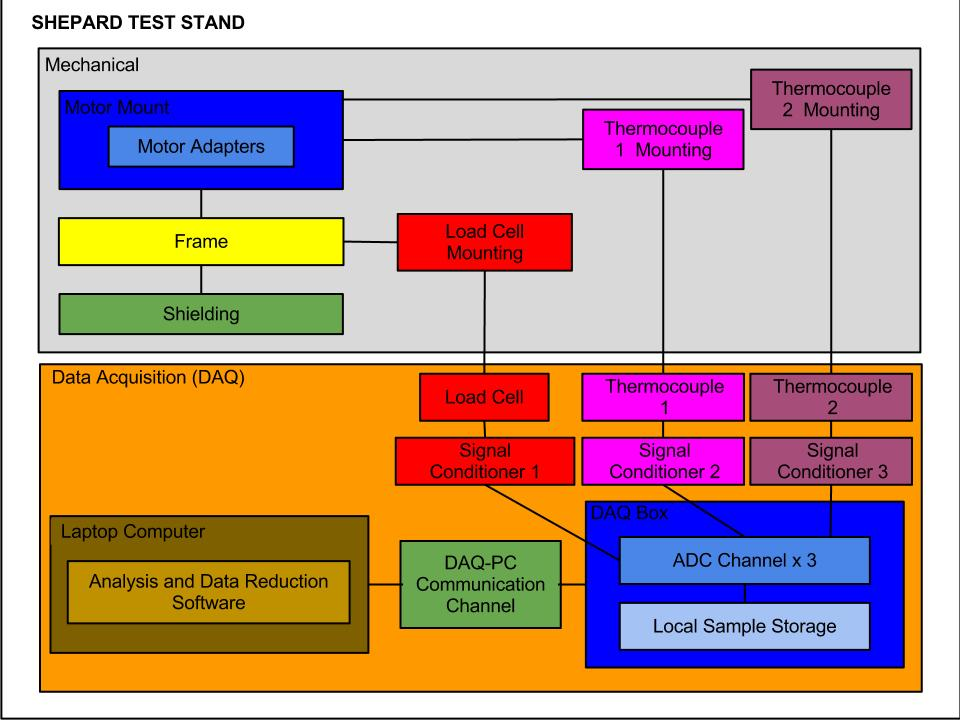
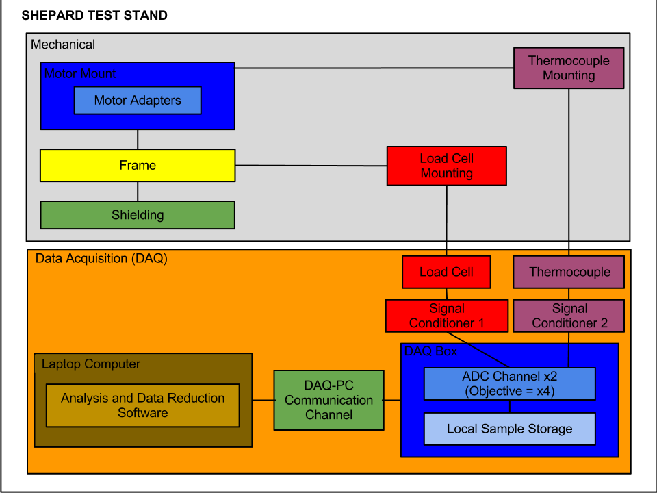
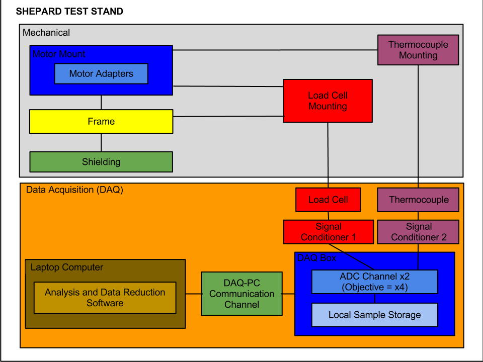
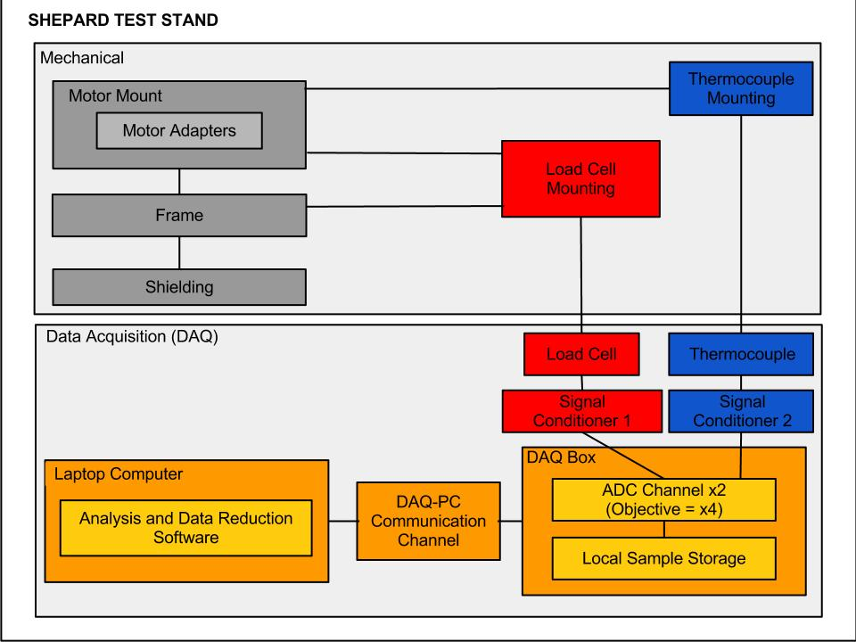
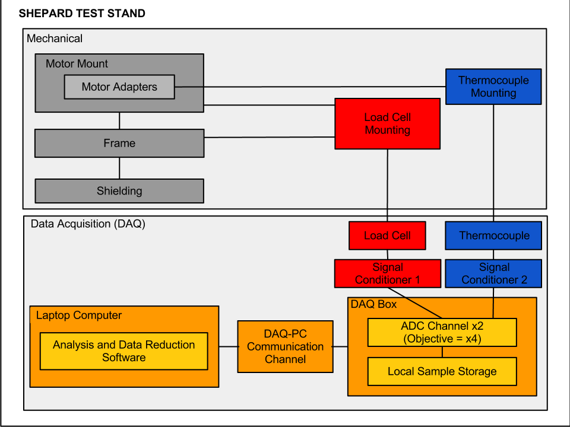

Forums » Discussion »
v1.0 - SEP Step 3 - Block Diagram
Added by Jeremy Wright over 10 years ago
I don't know what everyone else has in mind for the block diagram, but it's the 15th (this step's start date) where I am so I thought I'd throw something out there to start the discussion. I've embedded a jpg version so that everyone can get a quick view, and I've also attached an SVG file so that people can easily make changes in a program like InkScape. I drew the original in Google docs and I've shared that with everyone I could. Ben, let me know in a private message if you want me to share this with you too. Please make sure that you only use the Google doc to make a copy and draw your own changes. Then post your revisions and comments here so that anyone not using Google docs can see the progression of the diagram and participate.

Shepard_Block_Diagram.jpg (88.9 kB)
{kind=link}
Shepard_Block_Diagram.svg - Use this file to make your own edits in a program like InkScape (179.6 kB)
{kind=link}
Replies (15)
RE: v1.0 - SEP Step 3 - Block Diagram - Added by Ben Barnett over 10 years ago
The block diagram looks right to me.
At what point in the process do we discuss cost? I am thinking about ways to minimize cost of the "signal conditioning" blocks. This may be a significant time vs money, and buy vs build challenge. Note that thermocouple inputs require "cold junction compensation" that measures and compensates the terminals at which the thermocouple wire makes the transition to copper conductors. (Sorry I got technical again. I put it here to provide recognition of the cost challenge.)
Ben B.
RE: v1.0 - SEP Step 3 - Block Diagram - Added by Jeremy Wright over 10 years ago
Thanks for checking that Ben.
As soon as we lock this diagram down we can get more serious about the actual pricing, but I'd be interested to hear what your thoughts are about buy vs build. In your experience, is there one option that usually ends up being more cost effective than the other, or is it completely dependent on the situation?
RE: v1.0 - SEP Step 3 - Block Diagram - Added by Jeremy Wright over 10 years ago
One thing that I just noticed about the current diagram is that it uses the name "data acquisition" where the NAR testing manual (which we based several requirements on) uses "data collection". I'm wondering if the diagram should be changed so that the terminology matches.
RE: v1.0 - SEP Step 3 - Block Diagram - Added by J. Simmons over 10 years ago
I'm comfortable using the term "data acquisition", I think it is still clear, and I don't want to import more from the NAR material than we have to in order to be clear.
I am also looking over the Block Diagram this evening and had a couple of things to report.
- I added the Block Diagram as an SVG to the file storage under the "DMSF" tab. DMSF will track versions of the file.
- After adding the Block Diagram to DMSF, I modified it to use only one thermocouple to match the current version of the requirements, and I uploaded an updated version of the file to DMSF. The current version is included inline below.
I will post more when I finish my full review of the requirements and the Block Diagram.

Shepard_Block_Diagram_v0.2.png (45.4 kB)
{kind=link}
RE: v1.0 - SEP Step 3 - Block Diagram - Added by J. Simmons over 10 years ago
I stand by my comment in the hangout the other night, I think this looks very good. After going through the requirements line by line with the Block Diagram open in another window, I only have one more suggested change. I suggest we add a relationship line between the load cell mounting and the motor mount. Clearly, the load cell needs to be mounted to the frame, but it also needs to sense the force from the motor transferred through the motor mount. This change is shown in line below.

Shepard_Block_Diagram_v0.2a.png (45.6 kB)
{kind=link}
RE: v1.0 - SEP Step 3 - Block Diagram - Added by Jeremy Wright over 10 years ago
I'm fine with those changes. If there are no objections I say we gel it within a few days and move on.
RE: v1.0 - SEP Step 3 - Block Diagram - Added by J. Simmons over 10 years ago
Concur. I also added the latest rev of the diagram to DMSF.
RE: v1.0 - SEP Step 3 - Block Diagram - Added by Greg Moran over 10 years ago
I concur that this diagram represents the STS system. I have one question: What do the colors mean? If there is some meaning behind it can we add a legend or key? If not can we recolor the blocks so that they're all the same?
RE: v1.0 - SEP Step 3 - Block Diagram - Added by Jeremy Wright over 10 years ago
I used colors mainly because Amanda Wazniak's example block diagram did. Her's has far fewer colors though. I thought maybe a logical color scheme would fall out of the diagramming process, but other than tying the load cell and thermocouple items together, it never really did. What about following the color scheme of Amanda's diagram more closely?
https://opendesignengine.net/boards/4/topics/8?r=34#message-34
Another thing that just occurred to me as I was writing this response is that the thermocouple mounting should probably have a line running to the motor adapters instead of the motor mount. It seems like the thermocouples will have to be inserted in the motor adapters in order to measure casing temperature.
RE: v1.0 - SEP Step 3 - Block Diagram - Added by Greg Moran over 10 years ago
You can use the colors in any way that makes sense to you. There is no pre-defined scheme.
RE: v1.0 - SEP Step 3 - Block Diagram - Added by Jeremy Wright over 10 years ago
How about this? It feels a little less haphazard to me at least. To anyone who reads this now or later who's colorblind - the colors are not critical for understanding the diagram. The blocks and lines speak for themselves, and the colors are just there to create some visual separation.

Shepard_Block_Diagram.jpg (82.3 kB)
{kind=link}
RE: v1.0 - SEP Step 3 - Block Diagram - Added by Jeremy Wright over 10 years ago
Today is the due date for finishing this block diagram. If I can get an answer to the following question I think it would be safe to update and gel the diagram's document in the wiki.
Another thing that just occurred to me as I was writing this response is that the thermocouple mounting should probably have a line running to the motor adapters instead of the motor mount. It seems like the thermocouples will have to be inserted in the motor adapters in order to measure casing temperature.
Does everyone agree with this?
RE: v1.0 - SEP Step 3 - Block Diagram - Added by J. Simmons over 10 years ago
Sorry for the delay in responding... Yes, I agree about moving the thermocouple line from the motor mount to the adapter. Good catch.
RE: v1.0 - SEP Step 3 - Block Diagram - Added by Jeremy Wright over 10 years ago
Here's a new version. If I don't hear anything within two days I'll update everything and gel the diagram.

Shepard_Block_Diagram.png (46.1 kB)
{kind=link}
RE: v1.0 - SEP Step 3 - Block Diagram - Added by Ben Barnett over 10 years ago
The block diagram looks correct for measuring case temperature.
Another cost note: Moving the thermocouple to the motor adapter might imply use of a pair(s) of thermocouple connectors @ ~$5/pair.
See: http://www.omega.com/ppt/pptsc.asp?ref=SMPW_SMP_HMP_HMPW&ttID=SMPW_SMP_HMP_HMPW&Nav=
Alternatively, motor adapters might be configured to receive a thermocouple probe (low mass + high conductivity = fast response) that is permanently connected to the signal conditioning.
Ben
(1-15/15)